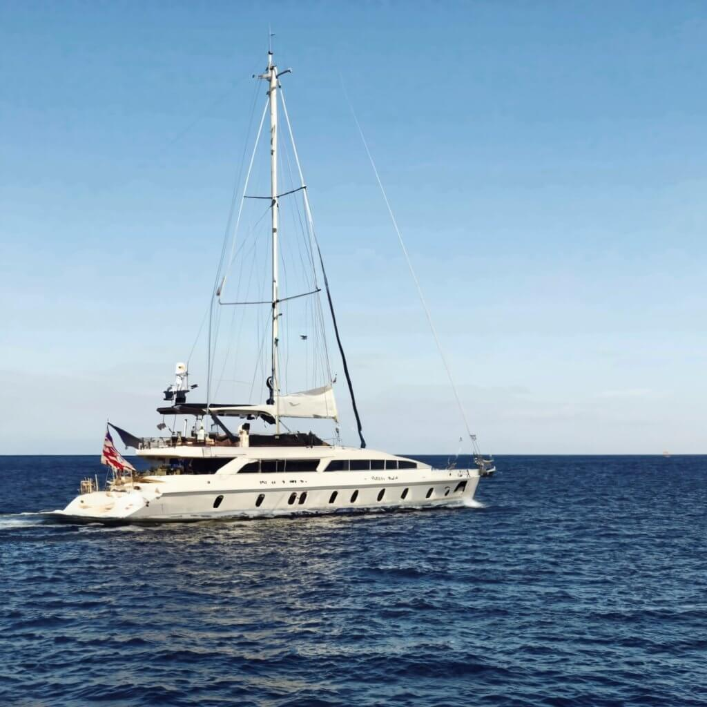
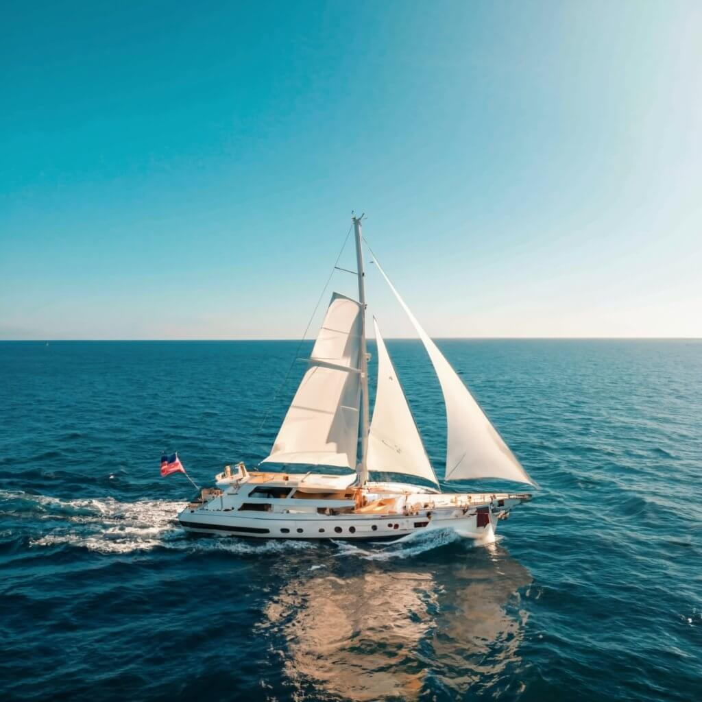

Comece sua viagem inesquecível conosco
Viaje conosco
Descubra horizontes ilimitados
Na Zeta Yachts, convidamos você a fugir do comum e navegar para extraordinário. Nossa frota de iates requintados espera por você, prometendo uma viagem de indulgência, relaxamento, e beleza inspiradora. Quer você seja um marinheiro experiente ou um aventureiro de primeira viagem, Zeta Yachts é o seu porta de entrada para descobrir os destinos mais encantadores do mundo no conforto de nossos navios premium.
Saber mais ―SOBRE NÓS
30+
Iates
95%
Felizes Marinheiros
120 metros
Comprimento médio do iate
50+
Locais exóticos
Bem-vindo ao Zeta Yachts, onde o fascínio do mar aberto encontra o epítome de viagens de luxo. Estabelecida com a paixão por proporcionar experiências de iate incomparáveis, a Zeta Yachts tornou-se um nome importante no mundo das aventuras marítimas.
Embarque em uma viagem perfeita com a Zeta Yachts, onde cada detalhe está meticulosamente curadoria para superar as expectativas. Nossa frota é composta por iates de última geração que combinam elegância com tecnologia de ponta, garantindo um cruzeiro tranquilo e luxuoso.
Junte-se a nós na Zeta Yachts para uma exploração além do horizonte. Descubra o beleza dos mares, crie memórias duradouras e deixe-nos redefinir sua percepção sobre passeios em iates de luxo. Sua jornada extraordinária começa com Zeta Yachts.
Galeria
Explore o mar com sua família e amigos
Escolha o seu iate
Serenidade Azure
Nome do iate: Azure Serenity Descrição: Delicie-se com o epítome do luxo marítimo a bordo do requintado "Azure Serenity". Este navio opulento, uma joia da coroa da Zeta Yachts, combina perfeitamente sofisticação com design de ponta para oferecem uma experiência de navegação incomparável.
Característicos
Design elegante: o Azure Serenity possui um design elegante e moderno que chama a atenção onde quer que ela navegue. O exterior, com acabamento em um impressionante azul celeste, complementa o paisagem marinha circundante.
Interiores luxuosos: entre em um mundo de conforto refinado ao entrar os interiores luxuosos do Azure Serenity. As cabines espaçosas são adornadas com móveis de bom gosto, criando um ambiente de luxo incomparável.
Vistas panorâmicas: o iate possui janelas amplas e deck aberto espaços, permitindo aos hóspedes desfrutar de vistas panorâmicas sobre o mar. Assista ao nascer do sol no conforto de sua cabine ou desfrute de um coquetel ao pôr do sol no terraço.
Contate-nos ―Viajante Celestial
Embarque em uma jornada celestial de elegância e exploração a bordo do "Celestial Voyager", um navio extraordinário com curadoria de Zeta Yachts. Mergulhe no ilimitado luxo e descubra os tesouros escondidos do mundo com esta maravilha do artesanato marítimo
Característicos
Design atemporal: O Celestial Voyager é uma obra-prima do atemporal design, combinando perfeitamente a elegância clássica com a estética moderna. Seu exterior, adornado com motivos celestiais, cria uma atmosfera de graça celestial.
Interiores suntuosos: entre em um reino de interiores suntuosos onde cada detalhe é projetado para o seu conforto. Cabines luxuosas, adornadas com decoração com temática celestial, fornecer um santuário íntimo em mar aberto.
Maravilhas Tecnológicas: O iate está equipado com equipamentos de última geração tecnologia de navegação e entretenimento, garantindo uma viagem perfeita e divertida através do águas.
Contate-nos ―NOSSAS VANTAGENS
Frota de luxo incomparável
A Zeta Yachts se orgulha de sua frota incomparável de iates de luxo, meticulosamente projetados para proporcionar uma experiência marítima excepcional e opulenta. Nossas embarcações combinam design de ponta com comodidades de primeira linha, estabelecendo um novo padrão para passeios de iate de luxo.
Itinerários elaborados com habilidade
Experimente viagens personalizadas, adaptadas aos seus desejos. Zeta Yachts oferece produtos habilmente elaborados itinerários, permitindo-lhe explorar os destinos mais encantadores do mundo com uma toque personalizado. Sejam cidades costeiras vibrantes ou retiros em ilhas isoladas, nossos itinerários prometem uma aventura como nenhuma outra.
Tripulação experiente e profissional
Confie a sua viagem às mãos competentes da tripulação experiente e profissional da Zeta Yachts. Comprometidos com a sua segurança e satisfação, nossos tripulantes são navegadores dedicados que garantem que cada momento a bordo seja tranquilo, seguro e repleto de hospitalidade incomparável.
Responsabilidade Ambiental
A Zeta Yachts está comprometida com o turismo de iates sustentável e ecológico. Temos orgulho de nossos esforços para minimizar o impacto ambiental das nossas viagens, lutando por cruzeiros neutros em carbono e promover práticas responsáveis para preservar a beleza dos mares que exploramos.
Personalização no seu melhor
A Zeta Yachts entende que cada viajante é único. É por isso que oferecemos um nível de personalização que vai além das expectativas. Personalize sua jornada para atender às suas preferências, seja a experiência culinária, o percurso percorrido ou as atividades a bordo. Com Zeta Iates, cada viagem é verdadeiramente sua.
Perguntas frequentes
Como faço para reservar um passeio de iate com a Zeta Yachts?
Reservar um passeio de iate com a Zeta Yachts é fácil! Basta visitar nosso site e seguir o processo de reserva fácil de usar. Você também pode entrar em contato com nosso atendimento ao cliente para obter assistência.
Quais destinos a Zeta Yachts oferece para passeios de iate?
Zeta Yachts oferece passeios para diversos destinos em todo o mundo. De de cidades costeiras vibrantes a ilhas paradisíacas isoladas, nossos itinerários atendem a diversas preferências.
Posso personalizar o itinerário do meu passeio de iate?
Com certeza! A Zeta Yachts é especializada na criação de experiências personalizadas. Contato nossa equipe e trabalharemos com você para criar um itinerário personalizado e adaptado às suas preferências.
O que está incluído nos pacotes turísticos de iate?
Nossos pacotes turísticos de iate geralmente incluem aluguel de iate, tripulação profissional, comodidades padrão e, dependendo do pacote, serviços adicionais como catering e água equipamento esportivo.
Quão experiente é a tripulação da Zeta Yachts?
A Zeta Yachts se orgulha de sua tripulação experiente e profissional. Nosso time passa por um treinamento rigoroso para garantir sua segurança, conforto e uma experiência de navegação agradável.
Qual é o tamanho dos iates da frota da Zeta Yachts?
Nossa frota é composta por uma variedade de iates, variando em tamanho para acomodar diferentes tamanhos de grupo. Você pode encontrar informações detalhadas sobre cada iate de nossa frota no site.
As crianças são permitidas nos Zeta Yachts?
Sim, crianças são bem-vindas a bordo! Oferecemos experiências familiares e nossos a tripulação é treinada para garantir a segurança e a diversão de todos os passageiros, independentemente da idade.
Posso levar minha própria comida e bebidas no iate?
Embora alimentos e bebidas de fora sejam geralmente permitidos, também oferecemos catering Serviços. Sinta-se à vontade para discutir suas preferências com nossa equipe ao planejar seu itinerário.
Quais medidas de segurança a Zeta Yachts adota?
Zeta Yachts prioriza a segurança. Nossos iates estão equipados com os mais modernos equipamentos de segurança tecnologia, e nossos tripulantes são treinados para lidar com diversas situações, garantindo uma viagem segura para todos os passageiros.
O que acontece em caso de mau tempo durante o passeio de iate?
Sua segurança é nossa principal prioridade. Em caso de mau tempo, a Zeta Yachts pode ajuste o itinerário ou remarque o passeio para garantir uma experiência segura e agradável.